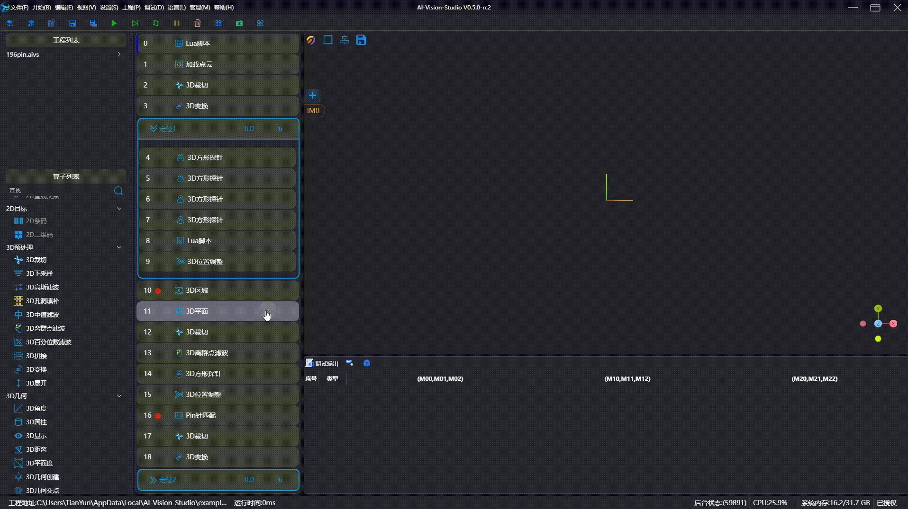
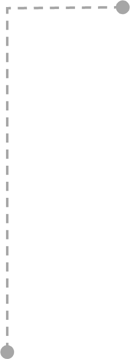
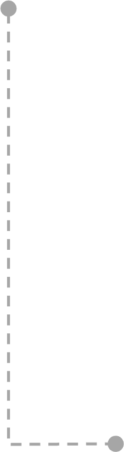
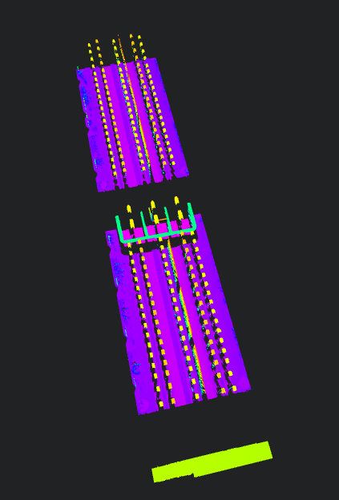
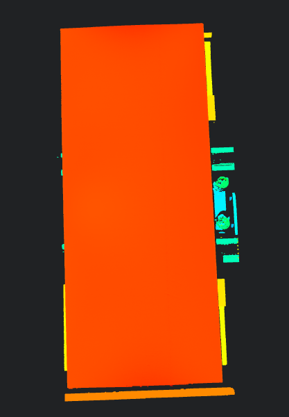
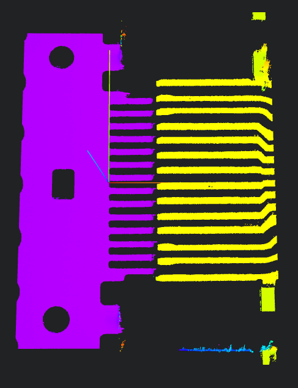
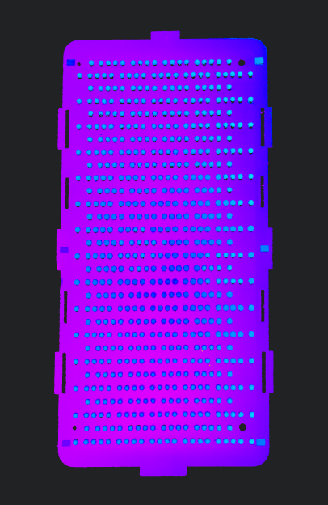
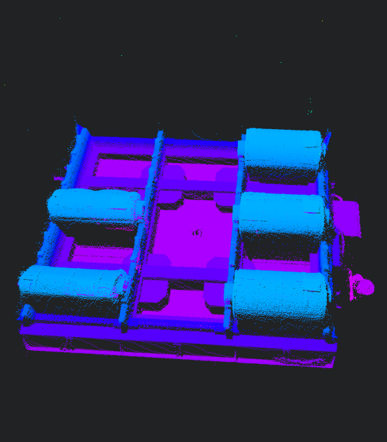
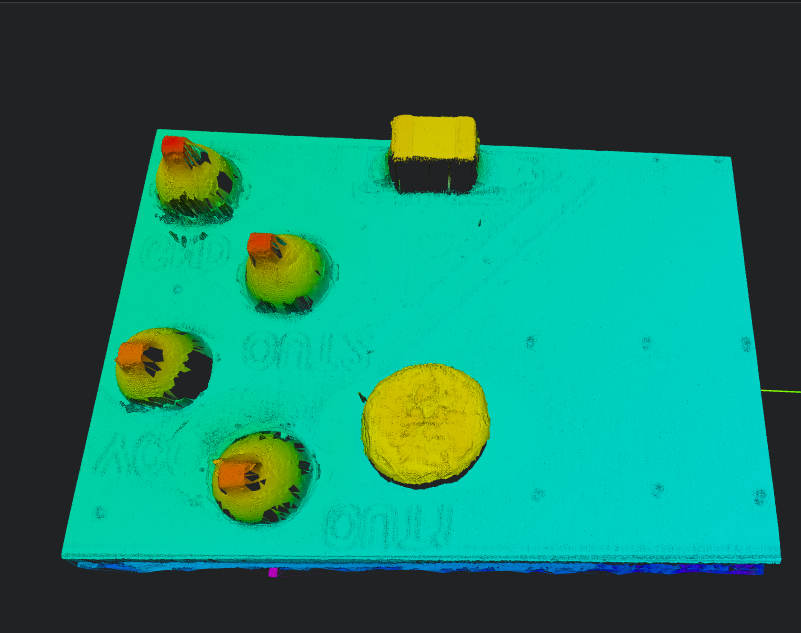

AIV - Industrial vision processing ProgramDec 2021 – Jun 2022




Project window
Execution window
Display window
Operation window
Output window
StackC++, Qt, OpenCV, PCL Examples

Connector Pin position measurement Measure the height, alignment, spacing and other parameters of all pins.

Aluminum shell surface flatness measurement

Type-C connector pin segment difference measurement

Measurement of coplanarity of BGA solder ball Measure the height and coplanarity of each pin of the BGA solder ball.

Copper coil position detection and size measurement

PCB solder joint volume measurement |